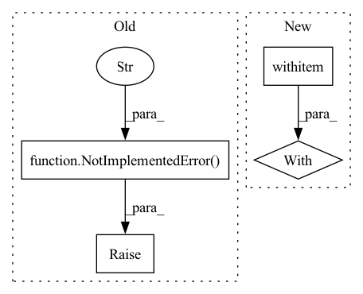

Pattern ID :20161
Before Change
with f:
pass
else:
raise NotImplementedError(
f"unknown task: {task}. A valid task is either `index` or `query` or `dryrun`." )
if __name__ == "__main__":
main()After Change
if task == "query":
f = Flow.load_config("flows/query.yml")
with f:
with TimeContext(f"QPS: querying", logger=f.logger):
f.search_files(os.environ.get("JiNA_DATA_FILE"), size=num_docs, on_done=get_top_match)
def get_top_match(resp):In pattern: SUPERPATTERN
Frequency: 3
Non-data size: 4
Instances Fragment ID: 65904077
Project Name: jina-ai/examples
Commit Name: b0e8f1b2653490d5d7dc7c9976235f830a4822fe
Time: 2021-05-14
Author: nan.wang@jina.ai
File Name: audio-search/app.py
M Class Name: AnonimousClass
N Class Name: AnonimousClass
M Method Name: main(2)
N Method Name: main(2)
M Parent Class:
N Parent Class:
M File Name: audio-search/app.py
N File Name: audio-search/app.py
M Start Line: 57
M End Line: 83
N Start Line: 29
N End Line: 58
Before Change
)
elif extension in COMPRESSION_EXTENSION_TO_PROTOCOL:
return COMPRESSION_EXTENSION_TO_PROTOCOL[extension]
raise NotImplementedError(f"Extraction protocol "{extension}" for file at "{urlpath}" is not implemented yet" )
def xopen(file, mode="r", *args, use_auth_token: Optional[Union[str, bool]] = None, **kwargs):
After Change
urlpath, kwargs = _prepare_http_url_kwargs(urlpath, use_auth_token=use_auth_token)
else:
urlpath, kwargs = urlpath, {}
with fsspec.open(urlpath, **kwargs) as f:
return _get_extraction_protocol_with_magic_number(f)
def _prepare_http_url_kwargs(url: str, use_auth_token: Optional[Union[str, bool]] = None) -> Tuple[str, dict]: Fragment ID: 65904076
Project Name: huggingface/datasets
Commit Name: d30d25d3dad590dffe2d3004b4b301dd562dd4f2
Time: 2021-11-12
Author: 42851186+lhoestq@users.noreply.github.com
File Name: src/datasets/utils/streaming_download_manager.py
M Class Name: AnonimousClass
N Class Name: AnonimousClass
M Method Name: _get_extraction_protocol(2)
N Method Name: _get_extraction_protocol(1)
M Parent Class:
N Parent Class:
M File Name: src/datasets/utils/streaming_download_manager.py
N File Name: src/datasets/utils/streaming_download_manager.py
M Start Line: 183
M End Line: 198
N Start Line: 224
N End Line: 250
Before Change
assert logp is not None
// TODO: Check that logp is correct if this type of graphs is ever supported
raise NotImplementedError("Test for supported behavior not written" )
After Change
w_vv = w.clone()
// TODO: Check that logp is correct if this type of graphs is ever supported
with pytest.raises(RuntimeError, match="could not be derived"):
joint_logprob({w: w_vv})
Fragment ID: 65904078
Project Name: pymc-devs/pymc3
Commit Name: dead9916d55846358a957eb9f81aa7e0fd06b17d
Time: 2022-09-12
Author: ricardo.vieira1994@gmail.com
File Name: tests/test_tensor.py
M Class Name: AnonimousClass
N Class Name: AnonimousClass
M Method Name: test_unmeargeable_dimshuffles(0)
N Method Name: test_unmeargeable_dimshuffles(0)
M Parent Class:
N Parent Class:
M File Name: tests/test_tensor.py
N File Name: tests/test_tensor.py
M Start Line: 282
M End Line: 286
N Start Line: 278
N End Line: 279